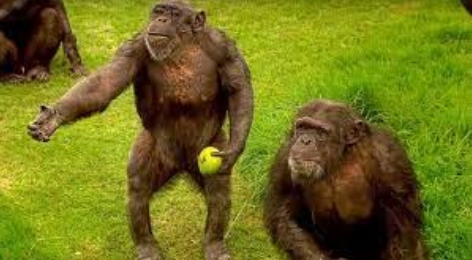

Image Gallery

Gorillas are gentle giants and display many
human-like behaviors and emotions, such as
and sadness. In fact, gorillas share 98.3%
of their genetic code with humans, making them
closest cousins after chimpanzees and bonobos.

The eastern lowland gorilla—also known as Grauer’s
gorilla—is the largest of the four gorilla subspecies.
It is distinguished from other gorillas by its stocky
body, large hands and short muzzle. Despite its size,
eastern lowland gorillas subsist mainly on fruit and
other herbaceous materials, just like other gorilla
subspecies.

Western gorillas can be distinguished from other gorilla
subspecies by their brownish-gray hair, auburn-colored
crests and overall smaller size. Eastern gorillas tend
to be black in color and larger in size.
A study in Cameroon by Isra Deblauwe showed that gorillas
have a high frequency of insect-eating and a high prey
diversity, even higher than those for the sympatric chimpanzees.